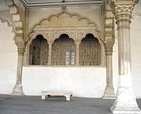

EXTERIOR


- MYTHS
- Inescapable Prison: There's a myth that the Agra Fort contained an inescapable prison where prisoners were kept without any chance of escape. While the fort did have prison cells, there's no evidence to suggest that they were inescapable.
- Haunted by Spirits: Similar to many historical forts, there are myths about Agra Fort being haunted by the spirits of past rulers, soldiers, or prisoners. However, there's no substantial evidence to support these claims.
- Underground Tunnels: Some myths suggest that Agra Fort has secret underground tunnels that were used by the Mughal rulers for escape or other purposes. However, no such tunnels have been discovered or confirmed.
- Hidden Treasures: Some myths suggest that Agra Fort houses hidden treasures, including gold, jewels, and other valuables. Despite various searches, no significant treasures have been found within the fort.
- Curse of Shah Jahan: It's sometimes believed that Agra Fort is cursed because Shah Jahan, who was imprisoned there by his son Aurangzeb, spent his last years gazing at the Taj Mahal, the mausoleum of his beloved wife Mumtaz Mahal. However, there's no historical evidence to support such a curse.
INTERIOR


- FACTS
- Mughal Architecture: Agra Fort is a prime example of Mughal architecture, characterized by its red sandstone construction, intricate marble work, and grand structures.
- Historical Significance: Agra Fort has immense historical significance as it served as the main residence of the Mughal emperors until 1638 when Shah Jahan shifted the capital to Delhi.
- World Heritage Site: Agra Fort was designated as a UNESCO World Heritage Site in 1983, recognizing its cultural significance and architectural beauty.
- Shah Jahan's Imprisonment: It's a well-documented fact that Shah Jahan was imprisoned by his son Aurangzeb in one of the chambers of Agra Fort, from where he could see the Taj Mahal, the mausoleum of his beloved wife Mumtaz Mahal.
- Architectural Features: Agra Fort boasts several architectural marvels, including the Jahangiri Mahal, Diwan-i-Khas, Diwan-i-Aam, and the Sheesh Mahal (Mirror Palace), each showcasing intricate designs and craftsmanship.
- Cultural Heritage Site: Agra Fort is designated as a UNESCO World Heritage Site. It was inscribed on the UNESCO list in 1983 for its outstanding universal value as an exemplary specimen of Mughal architecture and its significant contribution to India's cultural heritage.